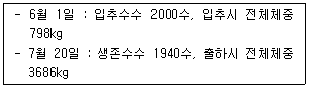
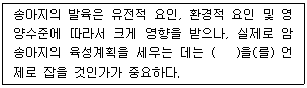

축산산업기사 (2012-09-15 기출문제)
1과목: 가축번식 육종학
1. 송아지가 생후 2⑤일에 이유할 뎨 이유시 체중은 206kg 였으나 생후 365일에는 372kg 이었다고 한다. 이 송아지의 이유 후 일당 증체량은 약 얼마인가?
- 약 1kg
- 약 2kg
- 약3kg
- 약 4kg
(정답률: 79%)

2. 다음 중 돼지의 잡종강세 현상이 아닌 것은?
- 출생시 새끼 돼지의 활력이 강하다.
- 이유시까지 생존율이 높다.
- 잡종 암컷의 산자능력이 우수하다.
- 사산 비율이 높다.
(정답률: 83%)
3. 육용계의 자질 개량을 위한 선발요건으로서 중요하게 고려 될 수 있는 사항이 아닌 것은?
- 성장률
- 사료효율
- 체형
- 산란율
(정답률: 83%)
4. 돼지 일당증체량에 있어서 A계통 일반조합능력이 +100g, B계통 일반조합능력이 +250g이고 이 두 계통간의 교배에 의한 자손의 평균능력이 +150g이었다면 A계통과 B계통간의 특정조합능력(specific combining ability)은?
- +200g
- -200g
- +25g
- -25g
(정답률: 54%)
5. 다음 중 비유량과의 유전상관이 가장 높은 형질은?
- 유단백율
- 유지방율(fat %)
- 유지방 생산량(fat yield)
- 유방염
(정답률: 51%)
6. 다음은 어느 양계장의 브로일러 사육성적이다. 이 때 생존율은 얼마인가?

- 97.0%
- 94.0%
- 88.2%
- 21.6%
(정답률: 77%)
7. 닭의 성장률을 측정하는 대표적인 척도는?
- 정강이의 길이
- 부리의 길이
- 근육
- 지방축적
(정답률: 87%)
8. 다음 중 산란계의 주요 경제형질이 아닌 것은?
- 산란강도
- 취소성
- 산란지속성
- 도체율
(정답률: 80%)
9. 뇌하수체 전엽호르몬과 관계없는 것은?
- Androgen
- LTH(황체자극호르몬)
- FSH(난포자극호르몬)
- LH(황체형성호르몬)
(정답률: 83%)
10. 다음 중 임신기간이 약 114일인 동물은?
- 소
- 말
- 양
- 돼지
(정답률: 85%)
11. 직장 촉진법을 이용한 소의 임신진단시 자궁각이 바나나정도의 크기이며, 태액이 충만하고 태아가 생쥐 크기정도 되어 임신감정이 가능한 임신 월령은?
- 30일령
- 60일령
- 90일령
- 150일령
(정답률: 58%)
12. 다음 중 어미돼지의 비유능력에 따라 크게 영향을 받는 형질은?
- 이유 시 한배새끼 체중
- 이유 후 일당증체량
- 사료효율
- 도체율
(정답률: 58%)
13. 발정 지속 시간이 가장 짧은 가축은?
- 소
- 말
- 돼지
- 면양
(정답률: 56%)
14. 육용계의 산육능력에 관한 유전에서 잘못된 설명은?
- 성장률에 대한 유전력은 높은 편이다.
- 근친교배종이 잡종교배종에 비해 일반적으로 성장률이 빠르다.
- 생체중과 정강이 길이간의 상관이 아주 높다.
- 수평아리가 암평아리에 비해 성장률이 빠르다.
(정답률: 79%)
15. 소에 있어서 배란이 일어나는 시기는?
- 발정개시와 동시에
- 발정종료 후 14시간 뒤
- 발정개시 12시간 전
- 발정개시 24시간 전
(정답률: 79%)
16. 다음 중 가축의 분만징후로 보기 어려운 것은?
- 조용하고 차단된 장소로 피신한다.
- 온순하고 피부가 윤택해 진다.
- 호흡이 촉진되고 정서가 불안해진다.
- 외부로부터의 점액 누출량이 많아진다.
(정답률: 87%)
17. 황체형성호르몬(LH)의 기능으로 알맞은 것은?
- 난포의 발육촉진과 부생식기의 성장촉진
- 황체형성 촉진과 배란
- 비유개시
- 황체 호르몬의 분비촉진 및 모성애 발현
(정답률: 78%)
18. 다음 중 뇌하수체 전엽에서 분비되는 호르몬이 아닌 것은?
- 난포자극 호르몬(FSH)
- 부신피질 자극 호르몬(ACTH)
- 색소자극 호르몬(MSH)
- 성장 호르몬(GH)
(정답률: 71%)
19. 다음 중 선발의 효과를 크게 할 수 있는 방법과 거리가 먼 것은?
- 선발차를 크게 한다.
- 세대 간격을 길게 한다.
- 선발강도를 크게 한다.
- 선발의 정확도를 높인다.
(정답률: 79%)
20. 황체기에 있는 젖소에 PGF2α를 투여했을 때 약 몇 일만에 발정이 일어나는가?
- 1일
- 3일
- 7일
- 10일
(정답률: 73%)
2과목: 가축사양학
21. 우유 중 지방율이 높아지면, 함유비율이 낮아지는 성분은?
- 단백질
- 유당
- 회분
- 전고형물
(정답률: 73%)
22. 반추가축(육우나 젖소 등)에서만 이용이 가능한 조단백질 공급원은 다음 중 어떤 것인가?
- 대두박
- 어분
- 요소
- 유채박
(정답률: 48%)
23. 생콩에 들어 있어 유독작용을 하는 비영양성 인자는?
- 트립신저해물질
- 고시폴
- 리나마린
- 탄닌
(정답률: 60%)
24. 가축에 급여하는 사료 1kg에 TDN, DE, ME 및 NE가 각각 72%, 2500kcal, 1800kcal 및 1200kcal의 에너지와 단백질이 10% 함유되어 있다면 이 때 에너지 : 단백질의 비율(EP/R)은?
- 720
- 250
- 180
- 120
(정답률: 46%)
25. 동물의 성장은 뼈가 제일 먼저 자라고 그 다음 근육, 지방의 순서로 성장하여 성시체중에 이른다고 한다. 그렇다면 지방 중에서 가장 늦게 성장하는 것은?
- 내장지방
- 근육내지방
- 피하지방
- 신장지방
(정답률: 68%)
26. 송아지의 성장발육에 유리하게 작용하는 초유 중에는 일반우유보다 적게 들어있는 성분도 있는데 다음 중 어느 성분인가?
- 유당
- 면역글로불린
- 칼슘
- 비타민A
(정답률: 69%)
27. 산란계의 1일 단백질 요구량으로 가장 적합한 것은?
- 5g
- 10g
- 16g
- 25g
(정답률: 67%)
28. 각 영양소의 대사에너지가 비육에 이용되는 효율이 가장 큰 가축은?
- 육우
- 돼지
- 면양
- 육계
(정답률: 60%)
29. 젖소에 급여하는 광물질 중 칼슘(ca)과 인(p)은 매우 중요한 대사 기능을 가지고 있는데 이들 광물질의 적정 비율은?
- 3 : 1
- 2 : 1
- 1 : 2
- 1 : 3
(정답률: 73%)
30. 비타민 A의 전구물질인 카로틴이 많이 함유된 사료는?
- 보리
- 밀기울
- 황색 옥수수
- 대두박
(정답률: 74%)
31. 번식우가 분만 후 2시간에 비해 20시간 후의 초유에 들어 있는 globulin의 흡수율은?
- 약 25%
- 약 50%
- 약 75%
- 약 100%
(정답률: 63%)
32. 소나 돼지의 경우에 육질이 단단해지며 지방을 희고 굳게 하는 성질이 있어 특히 비육 말기에 급여하면 효과가 좋은 것은?
- 보리
- 밀
- 옥수수
- 쌀겨
(정답률: 74%)
33. NRC(1994) 사양표준에서 0~3주령의 브로일러용 배합사료의 단백질 함량은?
- 23%
- 20%
- 17%
- 15%
(정답률: 65%)
34. 원료 사료의 입자를 일정한 크기로 분쇄하여 가루 형태로 배합한 사료의 명칭은?
- All mash
- Crumble
- Cube
- Pellet
(정답률: 58%)
35. 산란계의 에너지 요구량을 산출하는 기준이 되지 않는 것은?
- 체단백질 유지에너지
- 계란에 축적되는 에너지
- 활동 에너지
- 기초대사에 필요한 에너지
(정답률: 43%)
36. 다음 ( )안에 들어갈 적합한 용어는?

- 비유피크기
- 건유기
- 초산월령
- 사료증급기
(정답률: 75%)
37. 육탄당 1인산회로에 의해서 생성되는 NADPH는 다음 중 어디에서 중요하게 활용되는가?
- 지방 합성
- 단백질 합성
- 호르몬 합성
- 비타민 합성
(정답률: 44%)
38. 육성비육돈에 있어서 필수아미노산의 요구량과 그 효율이 가장 큰 것은?
- lysine
- arginine
- histidine
- cystine
(정답률: 73%)
39. 젖소의 비유량은 몇 산째 가장 많은가?
- 초산
- 2산
- 4산
- 6산
(정답률: 62%)
40. 난황의 색을 탈색시키는데 가장 관계 깊은 화합물은?
- sinigrin
- ptomain
- gossypol
- linamarin
(정답률: 61%)
3과목: 축산경영학
41. 다음 중 우리나라 축산경영의 발전방향으로 적합하지 않은 것은?
- 노동절약적 경영기술 도입
- 노동집약적 경영기술 도입
- 축산공해 방지대책 수립
- 수입사료 절약형 기술 개발
(정답률: 68%)
42. 다음 중 축산경영소득의 산출공식으로 옳은 것은?
- 순수익-경영비
- 순수익-농외수익
- 조수익-경영비
- 조수익-생산비
(정답률: 67%)
43. 다음 중 축산경영에 있어 생산의 3대 요소가 아닌 것은?
- 토지
- 경영기술
- 자본재
- 노동력
(정답률: 70%)
44. 다음 중 고정자본재로 볼 수 없는 것은?
- 착유우
- 비육우
- 축사
- 번식돈
(정답률: 78%)
45. (문제 오류로 문제 및 보기 내용이 정확하지 않습니다. 정확한 내용을 아시는 분께서는 오류신고를 통하여 내용 작성 부탁드립니다. 정답은 4번입니다.)
- 복원중
- 복원중
- 복원중
- 복원중
(정답률: 68%)
46. 어느 낙농경영농가에서 농후사료급여량이 100단위일 때, 총 우유생산량이 400단위라면 평균생산은 얼마인가?
- 0.25
- 2
- 4
- 8
(정답률: 74%)
47. 다음 중 비용에 관한 공식으로 틀린 것은?
- 평균비용 = 총비용 / 총생산량
- 총비용 = 총고정비용 + 총유동비용
- 한계비용 = 총비용증가분 / 산출량증가분
- 평균가변비용 = 산출량 / 총가변비용
(정답률: 54%)
48. 생후 6개월 정도의 송아지를 1년 정도 육성하여 판매하는 경영형태를 무엇이라 하는가?
- 육성경영
- 번식경영
- 일관경영
- 비육경영
(정답률: 48%)
49. 다음 중 젖소를 다두 사육하고자 할 때 적절하지 않은 것은?
- 토지, 노동력, 자본의 조합이 이루어져야 한다.
- 젖소군(群)의 평균산유량 향상에 노력하여야 한다.
- 자기자본비율을 낮추어야 한다.
- 사료자급율을 높여야 한다.
(정답률: 66%)
50. 취득원가 300만원, 잔존율 40%, 내용년수 6년인 젖소의 매년 감가상각비(정액법)는?
- 20만원
- 30만원
- 40만원
- 50만원
(정답률: 63%)
51. 다음 중 축산경영자의 기술적 측면의 기능에 해당되는 것은?
- 생산자재 구입
- 경영성과 분석
- 가축의 사육방법 결정
- 최종생산물인 축산물을 판매
(정답률: 67%)
52. 다음 중 대차대조표의 내용으로 틀린 것은?
- 특정 시점에서 농가 또는 기업경영단위의 재산과 자본의 상태를 간결하고 알기 쉽게 정리한 것이다.
- 대차대조표등식에서 자산은 자본과 부채의 차를 의미한다.
- 자산에서 부채를 뺀 차액을 순자산이라고도 한다.
- 차변과 대변을 항상 일치한다.
(정답률: 50%)
53. 다음 중 고정비용에 해당하지 않는 것은?
- 이자
- 감가상각비
- 급료
- 방역치료비
(정답률: 59%)
54. 다음 중 축산경영의 조직 결정시 고려하여야 할 경제적 조건이 아닌 것은?
- 축산물의 가격정책
- 축산물이나 물자의 문전가격
- 시장의 대소와 그 질
- 목장과 시장과의 경제적 거리
(정답률: 56%)
55. 다음 중 양계경영의 기술진단지표와 관계가 가장 적은 것은?
- 난중
- 일당증체량
- 출하일령
- 산란율
(정답률: 51%)
56. 다음 중 부채비율을 올바르게 나타낸 것은?
- 타인자본/자기자본 × 100
- 자기자본/타인자본 × 100
- (자기자본-타인자본)/자기자본 × 100
- 타인자본/(자기자본-타인자본) × 100
(정답률: 61%)
57. 모든 비용을 고정비와 변동비로 분류하고, 이것을 매출액과의 관계를 분석하여 경영의 채산점을 찾는 분석기법을 무엇이라 하는가?
- 선형계획법
- 대차대조표분석
- 안정성분석
- 손익분기분석
(정답률: 65%)
58. 다음 중 경영조직의 단일화에 따른 장점에 해당하는 것은?
- 기술의 고도화
- 노동력의 배분화
- 자금회전의 원활화
- 토지의 합리적 이용
(정답률: 70%)
59. 다음 중 한우경영에서 사료효율을 올바르게 나타낸 것은?
- 총체증량/사료섭취량
- 사료섭취량/총체증량
- 소화율/사료섭취량
- 생산성/사료섭취량
(정답률: 68%)
60. 다음 중 일반적으로 젖소 10두(10단위)와 동일한 단위의 양돈규모는 얼마인가?
- 50두
- 70두
- 90두
- 110두
(정답률: 66%)
4과목: 사료작물학
61. 다음 목초 중 콩과에 속하는 것은?
- 티머시
- 매듭풀
- 켄터키블루그라스
- 톨페스큐
(정답률: 58%)
62. 다음 중 옥수숫의 시비방법으로 가장 적당한 것은?
- 질소질 비료는 전량 기비로 하는 것이 생육상 유리하다.
- 질소질 비료는 생육시기별로 4회에 균등하게 나누어 준다.
- 질소질 비료는 1/2량을 기비로 나머지 1/2은 웃거름으로 나누어 준다.
- 질소질 비료는 기비로 1/3량을 추비로 2/3량을 웃거름으로 나누어 준다.
(정답률: 68%)
63. 다음 중 건초의 중요성이러고 볼 수 없는 것은?
- 운반과 취급이 편리하다.
- 젖을 생산하는 비유우에 있어서 다즙질인 건초의 급여는 매우 중요하다.
- 어린 송아지의 정장작용과 위의 발달을 촉진하여 밑소를 만드는데 중요하다.
- 우리안에서 기르는 기간이 긴 우리나라에서 건초의 급여는 중요하다.
(정답률: 53%)
64. 옥수수 파종시 10a당 18kg의 질소비료를 줄 경우 요소(질소 성분 46%)로는 몇 kg을 주어야 하는가?
- 18kg
- 28kg
- 39kg
- 57kg
(정답률: 55%)
65. 초지의 방목과 예취 이용에 관한 설명 중 가장 거리가 먼 것은?
- 방목 이용이 경제적이다.
- 방목 후에는 청소베기를 하여 주는 것이 좋다.
- 발굽에 의한 피해는 비오는 날보다 개인 날에 더욱 심하다.
- 방목은 비스듬히 베어지나 예취는 또 바르고 지표에 평행되게 잘린다.
(정답률: 72%)
66. 주로 가을에 파종하여 당년 12월 이전에 이용하는 사료작물은? (단, 중부지방의 경우이다.)
- 연맥(귀리)
- 호밀
- 수수
- 수단그라스계 잡종
(정답률: 53%)
67. 사료용 피에 대한 설명으로 적합한 것은?
- 단경기 작물이므로 가을에 파종하는 것이 좋다.
- 잎이 날카롭기 때문에 멸강충 피해가 적다.
- 풋베기용으로 재배할 때에는 조파보다는 산파하는 것이 소출이 높았다.
- 수수속(屬) 식물과는 달리 방목을 할 때에도 청산(HCN)중독의 위험이 없다.
(정답률: 49%)
68. 담근먹이 옥수수와 호밀로 이모작을 경작할 때 옥수수의 수량을 고려시 가장 적당한 파종 시기는?
- 4월 상순
- 5월 상순
- 6월 상순
- 7월 상순
(정답률: 51%)
69. 연속 방목함으로써 좋은 점은?
- 목초의 질이 저하된다.
- 초지 생산량이 감소된다.
- 관리가 용이하다.
- 목초의 수명이 단축된다.
(정답률: 78%)
70. 알팔파(alfalfa)에 대한 설명으로 맞는 것은?
- 줄기의 밑에 영양소를 저장하는 비늘뿌리(인경, corm)를 갖고 있다.
- 트립핑(tripping)에 의하여 수정을 하며 산성토양에서는 잘 자라지 못한다.
- 포복성 목초로 근류균을 생성하며 대쵸적인 품종으로 라디노(ladino)가 있다.
- 지하경을 갖는 목초로 잎이 아주 많으며 레드클로버(red clover)와 혼파되고 있다.
(정답률: 65%)
71. 벼과(화본과) 사료작물 및 목초류의 예취적기는?
- 생육 중기에서 수잉기 직전까지
- 수잉기 전에서 수잉기 사이
- 수잉기에서 출수초기 사이
- 유숙기에서 완숙기 사이
(정답률: 75%)
72. 사일리지를 조제할 때 재료의 적당한 수분함량은?
- 20~30%
- 40~50%
- 65~75%
- 80~90%
(정답률: 67%)
73. 사일리지 조제 중 내부온도가 상승하여 고온발효가 장기간 지속함으로써 나타나는 열손상(heat damage) 사일리지에 대한 설명이 아닌 것은?
- 기밀사일로에서 많이 발생하고 있다.
- 목초 또는 사료작물을 저수분 상태로 저장할 때 많이 발생한다.
- 갈변화로 기호성이 향상되어 단백질소화율이 증가한다.
- 열손상의 정도는 불용성 질소(ADIN) 함량을 지표로 판단한다.
(정답률: 63%)
74. 다음 중 음지에서 가장 강한 목초는?
- 오처드 그라스
- 톨페스큐
- 레드톱
- 브롬그라스
(정답률: 53%)
75. 다음 중 화본과 사료작물에 대한 설명으로 맞지 않는 것은?
- 뚜렷한 마디가 있다.
- 줄기는 대체로 속이 비어 있다.
- 근계는 수염모양의 뿌리로 되어 있다.
- 열매는 하나 내지 여러 개의 종자를 가지고 있다.
(정답률: 73%)
76. 다음 중 혼파조합의 기본원칙으로 옳지 않은 것은?
- 혼파에는 화본과 1종과 콩과 1종은 최소한 조합되어야 한다.
- 4종 이상을 조합하는 것은 유리하다고 하는 예는 드물다.
- 방목위주의 혼파조합에 기호성이 너무 다른 초종을 넣는 것은 좋지 않다.
- 혼파되는 초종은 서로 경합능력이 다른 것이라야 한다.
(정답률: 48%)
77. 초지는 경영상 여러 가지 유리한 점이 많기 때문에 혼파를 한다. 다음 중 혼파의 유리한 점이 아닌 것은?
- 관리가 용이
- 계절별 균등하게 목초생산
- 공간의 효과적인 이용
- 무기질소 비료의 절약
(정답률: 67%)
78. 사료용 맥류 중에서 목초의 특성과 가장 가깝고 이삭이 나와도 줄기가 굳어지는 것이 느려 청예용으로 알맞은 초종은?
- 보리
- 밀
- 호맥(rye)
- 연맥(oat)
(정답률: 58%)
79. 두과목초 중 단백질 생산성이 가장 우수한 것은?
- 알팔파
- 레드클로버
- 크림손클로버
- 알사이크클로버
(정답률: 75%)
80. 봄에 오차드그라스로 건초를 제조하려할 때 가장 적당한 시기는?
- 영양생장기
- 출수초기
- 출수후기
- 개화결실기
(정답률: 74%)